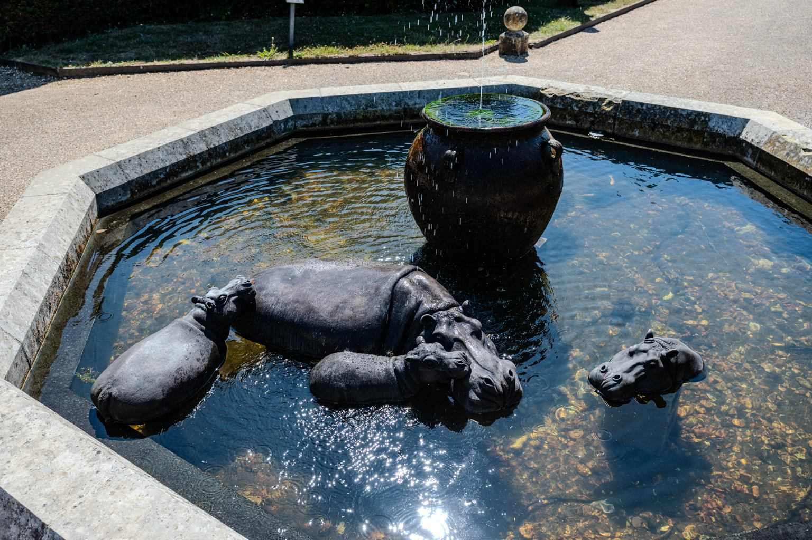
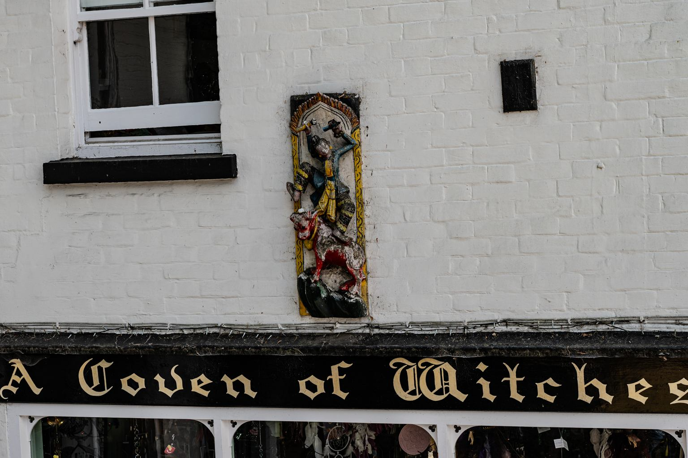
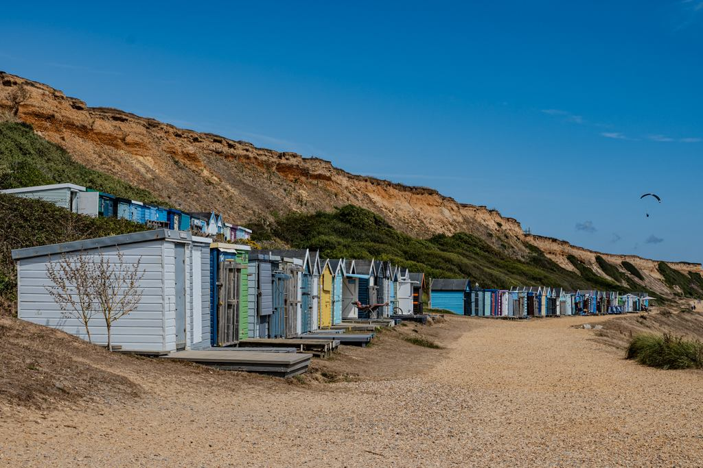
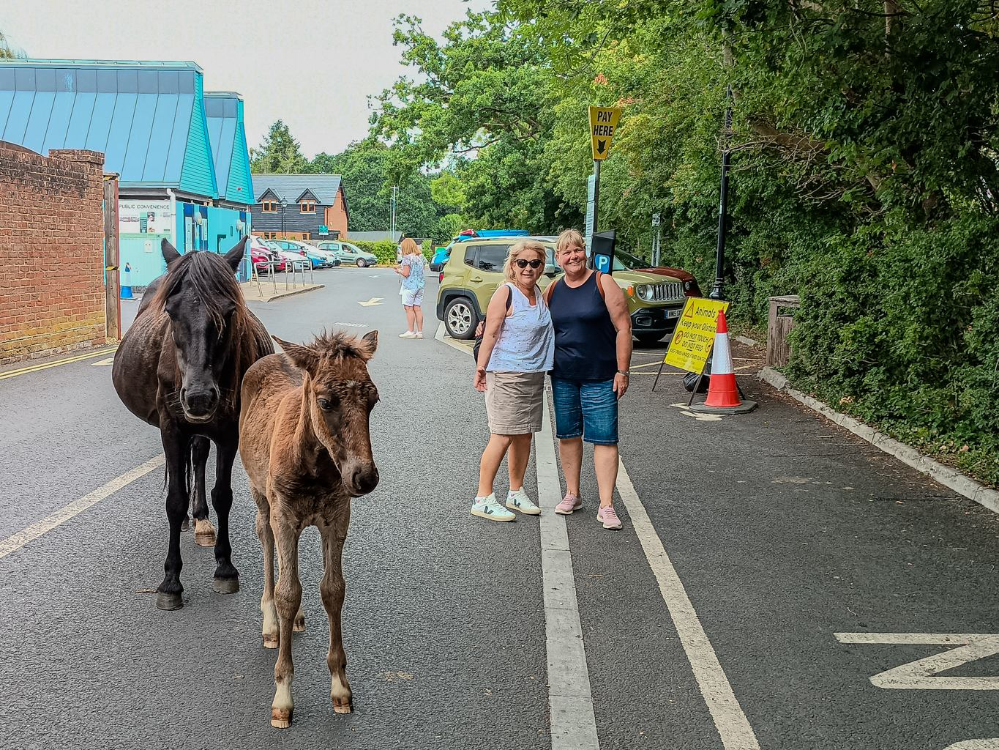

On a very hot July day, ponies find shade wherever they can, be it in a carpark, the town or on a main road
View over one of many medieval fields
In the middle of a drought, the parched grass is nibbled on by ponies in the distance. This is next to Brockenhurst offering great walks and views
New FORESt cottages
new forest cottage
new forest cottage
Early c19 Cob built cottage
Leafy walk through brockenhurst
Thatchers art in brockenhurst
Mother duck and kids go for a waddle on the roof, these animal sculptures are known as finials and are probably originally meant to ward of evil spirits or to keep other animals away
one of the main walks across the common
Heading towards the Lyminton river and streams
Poor old Tree
stepping stones over a stream
The brown water is caused by the high levels of tannins in the surrounding bogs and soil that leach into the water
Someone called it a carpark
Right in the middle of the New Forest, with ponies just the other side of the trees and we think Goats coming to say hello in the night.
relaxing
It was too hot to do much else.
A rare sighting of the designated driver
Looking towards Beulieu House with the monorail track and sculptures.

just £3000 - hippos wallowing
Around the grounds there where many 100s of sculptures from tiny birds to this delightful family of pygmy hippos.
startled deer
I like Blue
The house with a plane like pike
looking over the old tidal mill pond
More sculptures
the original spirit of ecstasy
With motoring history at every turn, this is the design that lead to the bonnet mascot found on Rolls Royces.
Chitty
Future? and Past
Dr Who's Whomobile and a Willys Jeep

village of burley is associated with witches
A rather modern phenomenon, a villager considered a witch by others in the 1950s started the local folklore about witches and the village now celebrates this.
a witches familiar
In july there are many foals
Another car park and more mobile chicanes
When is a water tower not a water tower
When in WW2 the Germans think it is a Fort
View over the Solent, IOW and Barton on sea Beech
We saw a pair of Hobbies hunting over the sandy cliff.
Waiting for Lunch
Locals watching intently for any crumbs from the table.
the unique cliff face
The cliffs at Barton on Sea are known for fossils of sharks teeth's found in what was once the bed of a Sea.
The IOW Needles and light house

huts on the beech with paraglider
a groyne marker
Helps the boats miss the rocks
two hobbies hunting
coastal erosion

Mother and Foal in brockenhurst car park
The ponies have free reign to wander where they like !!
July 2025, Ponies, Chocolate Box Villages, Striking Sea Views, Cars, Sculptures and Ponies.
☀️ Roaming Through the Parched Beauty of the New Forest
After weeks of sizzling sunshine and zero raindrops, even the lush heart of the New Forest in Dorset had taken on a golden, thirsty glow. This ancient patchwork of woodlands and wide-open moors—once a royal hunting ground and a shipbuilding resource—remains miraculously unchanged, still dotted with thatched cottages and medieval ridge-and-furrow fields that whisper stories of centuries past.
üê¥ Ponies, Cattle Grids, and a Surprise Visitor
We kicked off our adventure at a campsite tucked deep into the forest’s embrace, where our only barrier from free-roaming ponies, donkeys, cows, and sheep was a humble cattle grid. One morning, we awoke to mysterious sounds and evidence—droppings that suggested either mischievous goats or supersized rabbits had paid us a visit. Nature keeps you guessing!
üö∂ Wandering to Brockenhurst and Beyond
With boots laced and spirits high, we meandered into Brockenhurst, past dreamy commons and marshy moors. The walking was sublime, though the site itself had morphed into a buzzing Motorhome Village thanks to the summer swell.
üåä Milford on Sea‚ÄîA Second Chapter, Same Story, Different Season
Next stop: Milford on Sea, a charming coastal base that we’d visited years earlier during a bracing November trial-run in camper life (think rain, wind, and layers!). This time around, July brought warmth, coastal breezes, and… more wind (the awning didn’t survive). But even that couldn’t dampen our spirits—the location was a dream. From walks into the village and along the south coast to explorations of Hurst Castle and the wild beauty of Keyhaven nature reserves, every moment felt like a scene from a seaside film. A scenic bus ride even offered jaw-dropping views over the Solent to the Isle of Wight and, further afield, Sandbanks' sun-kissed sands.
üïäÔ∏è Echoes of History
Scattered across the landscape are poignant markers of the area’s role in WWII. Though many of the physical remnants—concrete runways and landing zones—have faded, the stories endure in memorials and quiet tributes.
üçÉ Where Time Walks Slow
The New Forest offers something rare in the Southeast: serenity with soul. Even Beaulieu, with its delightful motoring museum, radiates a sense of peace on the hottest of days. It’s a place where time slows and nature sings—a gem that gleams brighter the more you explore it.
May 2025, Walking in the Malvern hills with the sun shining, the RHS show and a night with the Pink Floyd experience - this is my favourite place so far !
February 2025. In October 2024, we were walking around the NEC, trying to decide on which camper to buy, with the choice dwindling fast as the last few VW Transporter 6.1s were being snapped up.